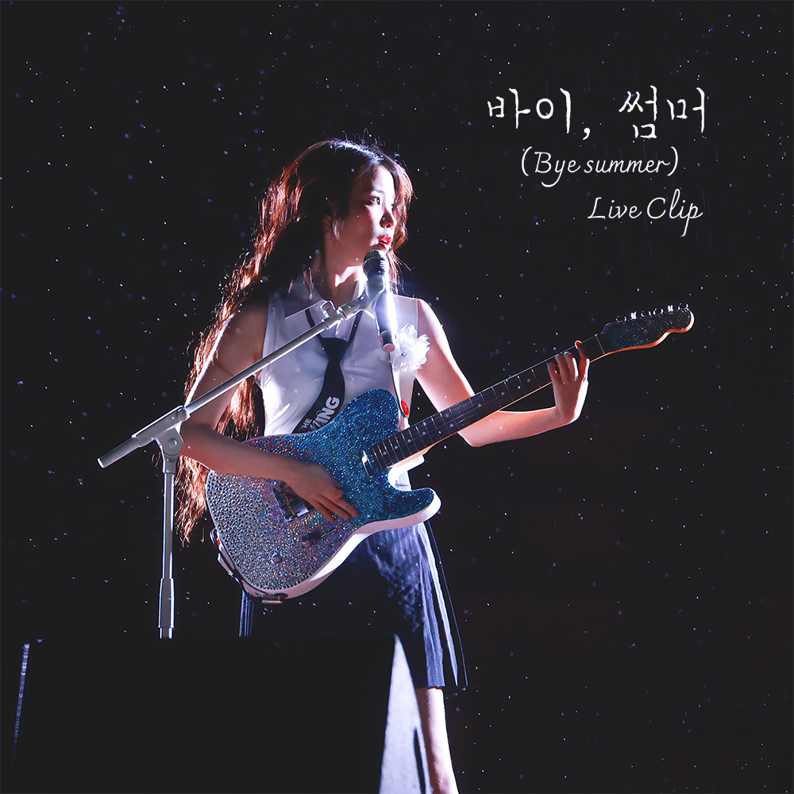

안녕하세요 라보엠입니다.
아이유가 최근 IU 월드투어 앙코르 콘서트에서 선보인 미발매곡 '바이 썸머(Bye Summer)'가 팬들의 뜨거운 관심을 받고 있습니다. 이 곡은 아이유의 월드투어를 마무리하는 의미 깊은 노래로, 그녀의 특별한 여름 추억을 담아냈습니다. 월드 투어 콘서트로 팬들과 함께 행복한 시간을 가졌던 아이유가 투어를 마무리하며 아쉬움과 추억을 담은 노래입니다.

아이유 IU 바이, 썸머 (Bye summer) Live Clip
IU '바이, 썸머 (Bye summer)' Live Clip (2024 IU HEREH WORLD TOUR CONCERT ENCORE : THE WINNING)
Lyrics by 아이유
Composed by 서동환, 아이유
Arranged by 서동환
아이유 IU 바이, 썸머 노래 가사
Hey Summer 인사할 때야
서늘한 바람이 불어 어느덧 끝무렵에
다다른 줄도 모르고 꼭 오늘을 닮은 밤
내게 주었던 말 못 잊을 것 같아 난
우리 뜨겁게 사랑했던 이름 없는 모든 날
안녕, 오랜 내 여름아 뒤돌아 보지마
어려운 말 없이 이대로 보내주자 멀리
달려가는 우리를 따라오던 밤
아무 예고 없이 시작된 여름날처럼
My Summer
그리울 거야 따가운 그을림까지도
Sweet sorrow
이유를 모르는 눈물이 고이고
이 계절에 사랑한 건
얼룩을 남기니까
오래도록
안녕, 오랜 내 여름아 뒤돌아 보지마
어려운 말 없이 이대로 보내주자 멀리
달려가는 우리를 뒤따라오던 밤
아래 그 더위까지
잘가 내 오랜 여름아 머뭇거리지 마
마지막 인사 대신 그저 널 안고 싶지만
멈춰버린 하늘에 별이 달리는 밤
내겐 영원 같았던 우리를 닫는다
얼룩이 진 얼굴로,
뜨거운 목소리로,
우리를 닫는다
향긋한 웃음으로,
일렁이는 목소리로,
Bye Summer
인사할 때야
서늘한 바람이..
아이유 바이, 썸머 탄생 배경
'바이 썸머'는 아이유가 약 5개월간의 월드투어를 마치며 작사한 곡입니다. 그녀는 이번 투어를 통해 인생에서 가장 긴 여름을 보냈다고 밝혔습니다. 서울과 요코하마를 제외한 대부분의 도시가 더웠기 때문에, 투어 내내 여름 분위기를 느꼈다고 합니다.
아이유는 평소 여름을 좋아하지 않았지만, 이번 투어를 통해 특별한 여름을 보냈다고 말했습니다. 그녀는 이 곡을 통해 "여름, 사랑했다"라는 메시지를 전하고 싶었다고 합니다.
곡의 특징
'바이 썸머'는 아이유의 서정적인 감성과 독보적인 음색이 돋보이는 곡입니다. 아이유가 직접 작사를 맡았고, 히트곡 'love wins all'을 작곡한 서동환이 작곡에 참여했습니다. 라이브 클립에서 아이유는 일렉 기타를 연주하며 무대를 시작합니다. 비가 내리는 가운데 열창하는 모습이 인상적이었습니다. 이 영상은 보고 음악 영화의 한 장면같은 느낌을 줍니다.
현재 '바이 썸머'는 정식 음원으로 발매되지 않은 상태입니다. 하지만 팬들의 뜨거운 반응을 고려하면, 향후 정식 발매 가능성도 있어 보입니다. 아이유는 이 곡을 통해 자신의 특별했던 여름을 팬들과 함께 나누고 싶어 했습니다. '바이 썸머'는 단순한 노래를 넘어 아이유와 팬들이 함께 만든 소중한 추억이 되었습니다. 앞으로 아이유가 이 특별한 곡으로 어떤 새로운 모습을 보여줄지 기대됩니다.